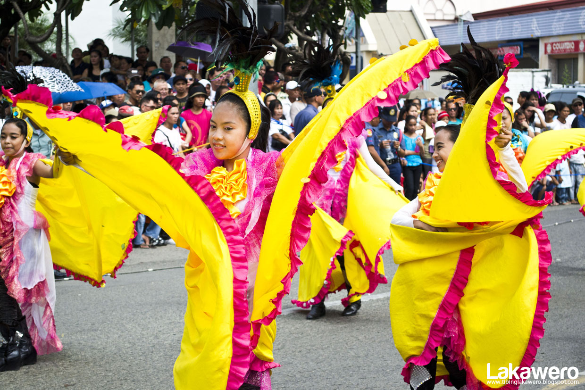
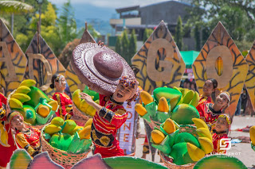
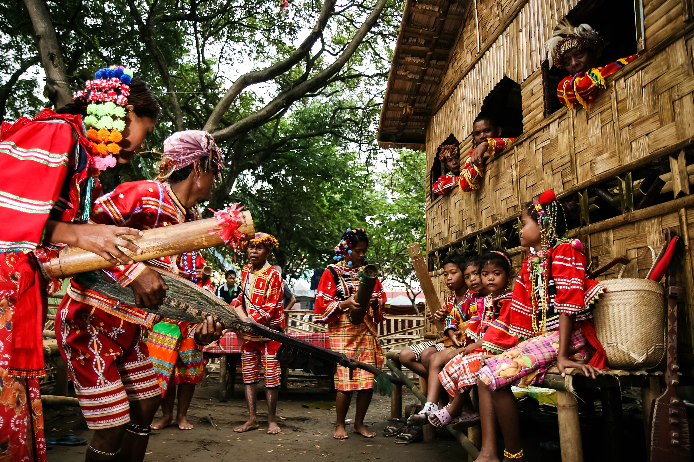

Celebrate with us! The province comes alive during the Araw ng Davao del Sur every July, featuring massive parades, cultural showcases, and agricultural fairs. In September, Digos City celebrates the Padigosan Festival, honoring its history and abundant harvests with vibrant street dancing, music, and a showcase of the city's best local products.
Marvel at colorful costumes and synchronized dances that tell stories of harvest and history.
Taste and buy the finest local produce, from sweet mangoes to premium coffee beans.
Witness the rich traditions of the Bagobo and B'laan tribes displayed with pride.
Davao del Sur is a province that loves to celebrate its abundant harvests, rich history, and diverse cultures. Joining a local festival is the best way to experience the warmth, creativity, and incredible energy of the people. The province comes alive during the Araw ng Davao del Sur every July, featuring massive parades and concerts. In September, the capital celebrates the Padigosan Festival, honoring Digos City's history with vibrant street dancing, live music, and a showcase of the city's best local products and delicacies.

The grand provincial anniversary held every July, featuring week-long celebrations and trade fairs.

Digos City's premier festival in September, highlighting local talent, food, and culture.

Special events honoring the Lumad tribes, featuring traditional music, weaving, and rituals.
Fly to Francisco Bangoy International Airport in Davao City, then take a bus south.
November to May is the dry season — ideal for outdoor activities and beach trips.
Davao del Sur offers affordable accommodations, food, and transport options.